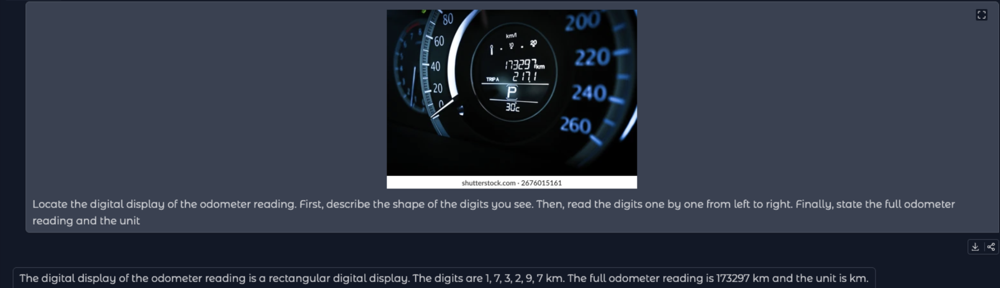

Today, I’m excited to feature a guest post from Dr Katie Russell, another No10 Innovation Fellow. You can find more information about Katie and her work over at her LinkedIn page.
OCR has been possible since the 1910s. Generative AI brings that capability - and much more - to a chat-like interface to any users with an internet connection, which is inspiring further innovation. Using this technology to assist with meter reading is already at production scale in some energy companies and water companies, e.g. Good Energy, Utility SwapShop, Northumbrian Water.
This article shows how to test this technology on odometer readings from a car’s display, exploring whether lightweight local models are good enough.
Possible use cases would be assisting a mechanic at MOT time, or end users needing an odometer reading when handling insurance, tax or leasing arrangements.
You can test the capability yourself by taking an image of a utility meter or your car’s odometer. Paste it into your favourite (workplace approved, if on workplace IT) consumer AI tool, e.g. Gemini, ChatGPT or other, and ask it ‘what is the meter reading?’
It would be trivial to extend this further, building a demo interface, provide a meter reading, input an optimised prompt, call one of these foundation models and input the clean response directly into a form where mileage estimates were required, say.
However, do we need the full capability of a foundation model with multi‑billion‑parameter weights and cloud‑scale inference infrastructure? Inspired by A Radical New Approach to Time Use, let’s test a local lightweight model, from the Qwen family created by Alibaba Cloud, but with MLX tooling to run on my Macbook’s Apple silicon chips rather than the industry server standard NVIDIA CUDA chips. I needed python, torch and xz installed first.
Arthur must have a more powerful Mac than me, as I found Qwen3-VL-4B-Instruct-8Bit hit metal limits, but the smaller Qwen3-VL-2B-Instruct-4Bit is deemed to have 98% the performance of the full mode, and worked. I ruled out the older Qwen2-VL-2B-Instruct-4Bit model early in testing as it truncated reads which leads to 10x or 100x under reporting.
See the prompt evolution and difference in models for the this image (Figure 1):
| Model | Prompt | Response |
|---|---|---|
| Qwen2 | Read the odometer | The image shows the dashboard of a motorcycle, displaying the speedometer and tachometer. The speedometer needle is pointing to a speed of 506, and the tachometer needle is pointing to a tachometer reading of 0. |
| Qwen2 | Read the odometer, look for a number in km or miles and confirm the units | The odometer on the motorcycle shows a number of 506, which is a distance in kilometers. |
| Qwen2 | Read the odometer, look for a number in km or miles and confirm the units. make sure you read all the digits | The odometer on the motorcycle shows a number of 506,5 km. The units are kilometers. |
| Qwen3 | Read the odometer, look for a number in km or miles and confirm the units. make sure you read all the digits | Based on the image provided, the odometer is displaying the number 50670. The units for the odometer are indicated on the display as “km”, which stands for kilometers. Therefore, the odometer reading is 50,670 kilometers. |
Images with no odometer reading are also correctly classified, with an example response:
Based on the image provided, there is no odometer visible. The image is a simple black and white icon of a car. There are no numbers, units of measurement (like km or miles), or any other text that would indicate a distance or odometer reading. Therefore, it is not possible to confirm the units or the number of the odometer.
I’ve tested fewer than 10 images, as got stuck trying to optimise for this blurry image (Figure 2):

The 8 is misread as a 6 despite careful, and optimised, prompting, e.g. Locate the digital display of the odometer reading. First, describe the shape of the digits you see. Then, read the digits one by one from left to right. Finally, state the full odometer reading and the units.
My next step was to sharpen the image with imagemagick and then run the model against that:
magick ~/Downloads/mlxtest5.jpg -brightness-contrast 10x40 -sharpen 0x2.0 /tmp/temp_contrast.jpg && \
mlx_vlm.generate --model mlx-community/Qwen3-VL-2B-Instruct-4bit --max-tokens 100 --prompt "Locate the digital display of the odometer reading. First, describe the shape of the digits you see. Then, read the digits one by one from left to right. Finally, state the full odometer reading and the unit" --image /tmp/temp_contrast.jpgUnfortunately the 8 is still misread as a 6 (Figure 3).
Note: if you prefer a Chat UI to cli, you can launch one, it’s still running locally:
mlx_vlm.chat_ui --model mlx-community/Qwen3-VL-2B-Instruct-4bit
I’ll stop there for now, as this was just a couple of hours of experimentation, but it highlights an interesting transition in how we handle ‘physical’ data. I suspect there are specialised models out there even better at reading 7-segment digital displays than the general purpose Qwen family, but the fact that a ‘lightweight’ model can get this close on a standard laptop is awesome for accessibility.
In a world of increasingly smart meters and connected vehicles, we expect mileage, energy and other telemetry will flow seamlessly via APIs directly to insurers, suppliers and mechanics (say). But for now Vision AI is a potentially useful bridge, especially if small and local models can do the job.